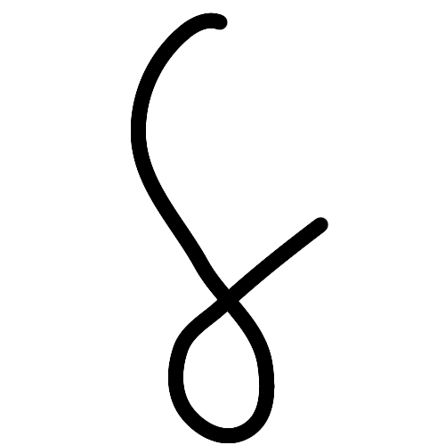
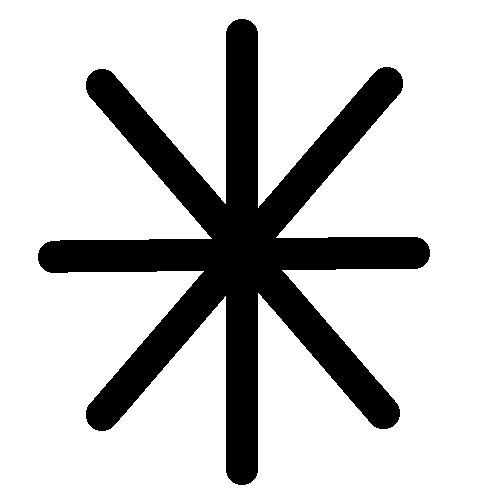
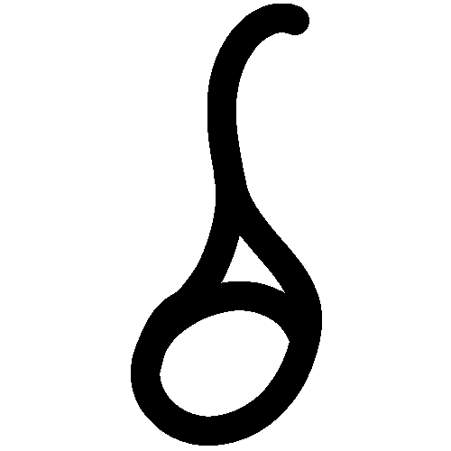

Mitis
⭐⭐⭐⭐

Tipo: Destrucción
Elementos:


Vínculo e Historia
Os encontráis en la puerta de la ciudad tras ser asignados con la misma misión. Os hacéis amigos rápidamente. Descubres que su razón para unirse al gremio es su amor por ayudar a los demás.
Tras superar la misión, le cuentas a Mitis tu razón para unirte al gremio y él decide acompañarte en tu aventura, haciéndose así un miembro definitivo de tu equipo.
Personalidad
Un joven que ama ayudar a los demás, con una sonrisa constante, siempre está buscando aventuras y hacer felices a quienes se encuentra. Tiene una energía infinita, es incansable. Sin embargo, cuando encuentra injusticias, no duda en ponerse serio y actuar.
Dominio Elemental y Hechizos
- Luz (DPS): Ataques mágicos directos concentrando fotones en la tinta.
- Fuego (DPS): Terra passione: Crea un pequeño campo de fuego en el suelo que hace daño constante a los enemigos.
- Viento (DPS): Lamina ventus / Cultro ventus: Lanza ráfagas de cuchillas y un cuchillo gigante de aire con gran impacto.